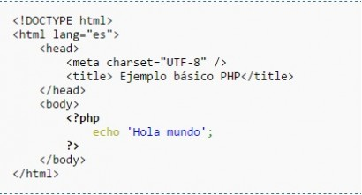

| ¿QUE ES PHP? | ¿PARA QUE SIRVE? | FUNCIONES DE PHP | PRINCIPALES CARACTERISTICAS | BIBLIOGRAFIA |
PHP es un lenguaje de código abierto muy popular, adecuado para desarrollo web y que puede ser incrustado en HTML. Es popular porque un gran número de páginas y portales web están creadas con PHP. Código abierto significa que es de uso libre y gratuito para todos los programadores que quieran usarlo. Incrustado en HTML significa que en un mismo archivo vamos a poder combinar código PHP con código HTML, siguiendo unas reglas. PHP se utiliza para generar páginas web dinámicas. Recordar que llamamos página estática a aquella cuyos contenidos permanecen siempre igual, mientras que llamamos páginas dinámicas a aquellas cuyo contenido no es el mismo siempre. Por ejemplo, los contenidos pueden cambiar en base a los cambios que haya en una base de datos, de búsquedas o aportaciones de los usuarios, etc.
En un sitio dinámico, la información generalmente está contenida en una base de datos. Cada vez que mostramos la página, como por ejemplo una página de noticas, buscamos en la base de datos las últimas noticias que tenemos ingresadas para mostrar en el navegador del visitante. Ahora bien, ¿cómo se consigue que la página vaya mostrando noticias nuevas? Simplemente cargando las mismas en la base de datos, por ejemplo, a través de un formulario que rellena una persona y que una vez relleno cuando pulsa “Enviar” implica que lo que haya escrito se guarde en nuestra base de datos.
Lo que distingue a PHP de JavaScript es que el código es ejecutado en el servidor, generando HTML y enviándolo al cliente como si fuera una página web estática. El cliente recibirá los resultados que el servidor devuelve después de interpretar el código PHP, sin ninguna posibilidad de determinar qué código ha producido el resultado recibido. Con PHP puedes procesar la información de formularios, generar páginas con contenidos dinámicos, o enviar y recibir cookies, entre muchas más cosas. PHP lo utilizan desde pequeñas páginas web hasta grandes empresas. Muchas aplicaciones web están construidas usando PHP. Podemos citar Joomla y Drupal (gestores de contenido de páginas web).
PHP también puede utilizar y presentar resultados en otros estándares de datos o lenguajes propios de los desarrollos web, como XHTML y cualquier otro tipo de ficheros XML. PHP puede autogenerar estos archivos y almacenarlos en el sistema de archivos en vez de presentarlos en la pantalla, utilizando estos ficheros para generar contenido dinámico. Es decir, el contenido dinámico puede surgir de otros sitios además de desde bases de datos.
